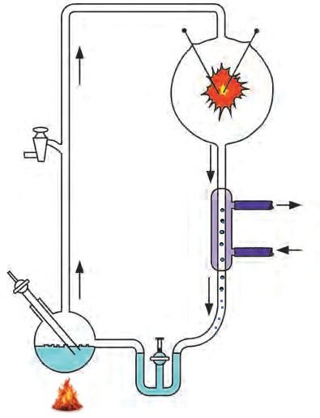
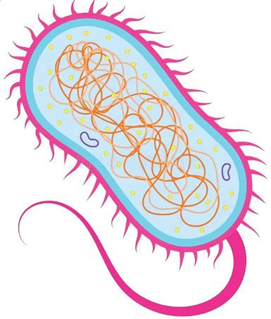
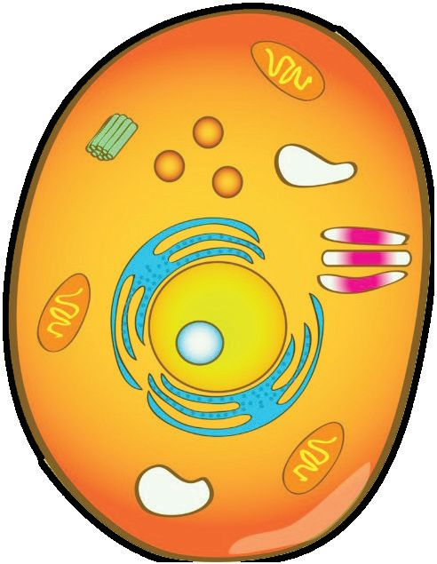
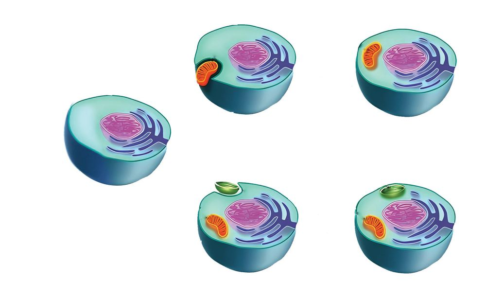

The living organisms that inhabited the earth millions of years
ago were profoundly different from those that exist today. The
evolution of living organisms was caused by adaptations to changes
in environmental factors including habitat, climate and availability
of food as well as internal cellular changes. This process ultimately
gave rise to the diverse range of organisms that exist today.
For example, the ancestor of modern whales including the blue whale
was an ancient mammal named pakicetus that inhabited the earth
approximately 50 millions years ago. Fossil studies have revealed
that this organism possessed physical characteristics similar to
those of wolf along with the body shape adapted for swimming. As
the descendants of these organisms spent more time in the water
their limbs gradually evolved into flippers.
The evolutionary history of whales serves as an evidence for the fact
that changes occur in living organisms as a part of their adaptation
to changing environment. All living organisms including human
beings have a curious evolutionary history of this kind.
122
Page 123
BASIC SCIENCE - VIII
Why do such changes occur to the living beings over
time? If all organisms evolved from pre-existing ones,
what was the first form of life?
Investigations are continuing in the world of science
to find answer for such questions. It is believed that
life emerged on Earth approximately 3.5 billion years
ago. Some of the early simple organisms carried out
photosynthesis, releasing oxygen, which eventually led
to the evolution of more complex life forms. Over time,
these complex organisms evolved into the diverse plant
and animal species seen today.
Based on the existing evidences, scientific explanations
have been proposed for questions related to this.
Conclusions drawn from scientific research on the origin
of life can be analysed through Illustration 8.1.
Theories on the origin of life
Chemical Evolution
Theory
Panspermia Theory
Life originated elsewhere
in the universe and was
accidentally transported to
Earth in the form of
microorganisms or spores.
These microscopic particles
are referred to
as Panspermia.
The Chemical Evolution Theory
explains that life originated
as a result of changes in the
combination of chemical
substances in the ocean under
the unique conditions of the
primitive Earth.
Fig. 8.1
123
Page 124
BASIC SCIENCE - VIII
Even though various theories have evolved at different
times to explain the origin of life , the chemical evolution
theory has gained more acceptance and has strong
evidence based support to origin of life.
Origin of life
How would have been life originated through the
chemical evolution process?
Analyse the given information and record your findings
using indicators.
Atmosphere of primitive earth
•
•
•
•
•
Sources of Energy
• Sunlight
• Lightning
• Ultraviolet Rays
• Volcanic Eruptions
High temperature
Hydrogen, Methane, Carbondioxide, Hydrogen
sulphide, Ammonia, Water vapour.
No free oxygen.
The condensation of steam, prolonged rainfall and
the formation of oceans.
Ocean formed by dissolving various substances.
Formation of simple biomolecules in ocean
Formation of complex biomolecules
A complex molecule called nucleic acid
and the lipid sheath forms.
Indicators
Characteristics of primive earth’s atmosphere
Formation of Ocean
Energy sources that assist the formation of
biomolecules.
Formation of primitive cell.
From illustration 8.2, we have understood how the
formation of the primitive cell occurred through the
process of chemical evolution. Several experiments have
been conducted to support this theory.
Analyse illustration 8.3 to learn about some of the
scientists who contributed to this field.
Harold Urey, Stanley Miller
Together proved that
the fundamental units
responsible for the origin of
life can form from
simple gases.
Sydney Fox
Joan Oro
Proved that
molecules similar
to proteins can
be synthesised
artificially.
Adenine, one
of the key
building blocks
of nucleic acids,
was artificially
synthesised.
Illustration 8.3
There are several experimental evidences to substantiate
chemical evolution theory. The Urey-Miller experiment,
in which the atmosphere of primitive earth was recreated
in the laboratory is one of the remarkable experiments in
the history of scientific expedition in evolution.
Analyse iIllustration 8.4 and its description. Complete
table 8.1 accordingly.
125
Page 126

Figure fig_ch07_p126_01 (Page 126)
BASIC SCIENCE - VIII
Electrode
Electric spark
form of energy
CH4 , NH3 , H2, H2O
Gases similar to those
in the primitive Earth's
atmosphere.
Hot water
moves out
condensor
Cold water
moves in
Water droplets
containing
biomolecules
Amino acids
Boiling water
Biomolecule which is the building
block of proteins
Illustration 8.4
Urey - Miller Experiment
This experiment was conducted by artificially recreating
the conditions of primitive Earth in a laboratory. Through
this experiment, scientists were able to synthesize amino
acids, the biomolecules. It provided evidence that, under
suitable conditions, biomolecules can be formed from
inorganic components.
Condition in the
primitive earth
Indicators
Gases
Energy source for
chemical synthesis
•
Lightning & Thunder
•
Table 8.1
126
Experimental set up
Page 127

Figure fig_ch07_p127_01 (Page 127)

Figure fig_ch07_p127_02 (Page 127)
BASIC SCIENCE - VIII
From primitive cells to complex organisms
Changes occurred in the primitive cell
The primitive cell is composed of nucleic acids capable
of self replication and a lipid layer covering it. Primitive
forms like bacteria evolved from this primitive cell.
These simple structured cells which were formed in the
beginning are called prokaryotes.
From prokaryotic cells to Eukaryotic cells
How did more complex structured eukaryotic cells form
from prokaryotes ?
What is the significance of eukaryotes?
Analyse illustration 8.5 based on the indicators and
record your inferences in the Science Diary
A few cell organelles.
Cell organelles have no
membranous covering.
Membrane bound
nucleus absent.
•
•
•
Many cell organelles
Organelles with
membranous covering
Membrane bound nucleus
present.
Illustration 8.5
127
Page 128

Figure fig_ch07_p128_01 (Page 128)
BASIC SCIENCE - VIII
How might other organelles found in cells have been
formed?
Analyse the given illustration 8.6 and prepare a note on
it.
Engulfing a small
aerobic bacterium.
Instead of digesting the
small cell, it provides
protection. Gradually,
it transforms into
mitochondria.
Eukaryotic cell
Engulfing a small
photosynthetic
bacterium.
Instead of digesting the
photosynthetic bacterium,
it provides protection. Gradually,
it transforms into a chloroplast.
Illustration 8.6
In prokaryotes, genetic material is scattered within
the cytoplasm. As part of the evolutionary process, the
formation of a nuclear membrane was the key feature
of eukaryotic cells. Additionally, membrane-bound
organelles were evolved, enabling them to perform
specialised functions.
128
Page 129
BASIC SCIENCE - VIII
Complete Table 8.2.
Indicators
Prokaryotic cell
Structure
Simple
Nucleus
Eukaryotic cell
Well defined nucleus with
membrane covering
Cell organelles such
as mitochondria and
chloroplasts
Table 8.2
Around 3.8 billion years ago, primitive living cells
were formed from the molecules present in earth's
oceans. By 3.5 billion years ago, prokaryotic cells
were evolved.
Approximately 2.5 billion years ago, the occurence of
photosynthesis led to the release of oxygen into the
atmosphere. Later, eukaryotic cells with organelles
such as mitochondria and chloroplasts were evolved.
Over time, simple multicellular organisms appeared
around 800 million years ago, followed by more
complex life forms.
How long might it have taken for diverse life forms to
evolve from prokaryotes? Analyse the timeline (Table 8.3)
and prepare a note based on it.
Formation of the first
form of life: singlecelled prokaryotes with
simple structure.
2.5 billion - 541 million
years
Eukaryotic
multicellular
organisms.
541 – 252 million years
Plants and animals
on land
252 – 66 million years
Dinosaurs
From 66 million years
ago to the present
Emergence of
mammals, the origin of
human being.
Table 8.3
130
Page 131
BASIC SCIENCE - VIII
You have understood the timeline of evolution from the origin
of earth to the origin of human beings. If so, let's calculate the
Geological Time Scale from the origin of universe to origin of
human beings. Cosmic calendar is an illustration that helps us
to understand this easily.
Cosmic calendar
Suppose we are preparing a cosmic calendar assuming the age
of universe as one year. In this calendar one second is equivalent
to around 438 years. A simple model of cosmic calendar is
illustrated below. Analyse it on the basis of indicators and
record your inferences.
The universe was
born at exactly 00.00
on the morning of
January 1st.
December 31 - 11.52 pm - Human
December 27 - Mammal
December 26 - Dinosaurs
December 20 - Land Plants
December 18 - Vertebrate
Eukaryotes
ve
No
nu
a
ry
March
Cosmic calendar
il
Ap
r
s
gu
Au
t
Solar System - Earth
September
Origin of life
y
Oc
ar
ru
tob
er
b
Fe
Prokaryotes
r December Ja
e
mb
Ju
ly
June
y
Ma
Illustration 8.7
131
Page 132
Figure fig_ch07_p132_01 (Page 132)
BASIC SCIENCE - VIII
According to the Cosmic Calendar, humans appeared in
the final moments of the last day of the year. Doesn't this
clearly show how recent the emergence of humans is in
the timeline of the universe?
The process of evolution is the cause of present
biodiversity. It is difficult to predict the direction of
evolution as it is an accidental phenomenon. Imagine
how evolution would be continued. Make your thoughts
into creative writings.
Let's Assess
1. Write which of the given statements are not related to
eukaryotes.
a) A clear nuclear membrane is seen.
b) Cell organelles have no membranous covering.
c) Genetic material is found inside the nuclear
membrane.
d) Organelles that perform various functions are
seen.
2. Arrange the timeline properly.
Dinosaurs
Eukaryotes
Prokaryotes
The first animals and plants on land
Multicellular organisms
Mammals
132
Page 133
Figure fig_ch07_p133_01 (Page 133)
BASIC SCIENCE - VIII
3. Match the following.
A
B
a) Urey - Miller
b) Joan Oro
c) Sidney Fox
d) Oparin - Haldane
1) Theory of chemical evolution
2) Amino acids
3) Proteinoid
4) Nitrogen base
5) Eukaryotes
Extended Activities
•
•
Make a model of the Urey-Miller experimental setup
using the materials available from the surroundings
and display it at the science corner.
Prepare a digital model/chart of the Cosmic calendar
including more information and exhibit in the
classroom.